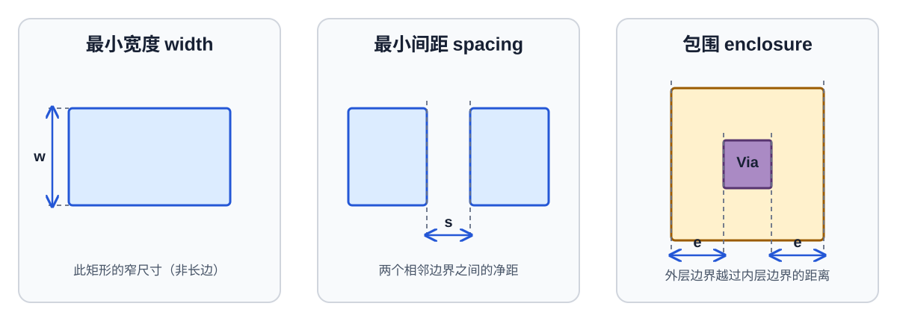

第 10 章 读懂 PDK 与设计规则
新工艺适配的第一步不是改 Python，而是建立工艺事实清单
- 分清 PDK、DRM、layer map、SPICE model、DRC/LVS/PEX deck 的职责。
- 正确处理微米、米和 database unit，避免“看起来只差一个比例”的灾难。
- 理解 width、space、enclosure、extension、notch、area 等基本规则及条件规则。
10.1 一个可迁移的 PDK 至少要有什么
| 资料/文件 | 回答的问题 | 迁移中的产物 |
|---|---|---|
| DRM / design-rule manual | 哪些几何合法，哪些规则是强制/推荐/条件规则？ | 规则追踪表：rule ID→含义→生成器字段/deck |
| GDS layer map | 每个 mask/purpose 对应哪个 layer/datatype？ | LibreCell output_map 与查看器显示配置 |
| 器件与 SPICE 模型 | 合法 MOS 类型、模型名、W/L/多指（finger）参数和 PVT include 是什么？ | 输入网表规范、模型名适配、特征化条件 |
| DRC deck | 如何执行 foundry 几何检查？ | 批处理命令、deck 版本、零违规基线 |
| LVS/提取规则文件 | 如何从层组合识别器件、端子和体端？ | 版图与 CDL 对比回归、器件映射 |
| PEX 技术文件/deck | 如何提取互连 R/C、耦合和器件寄生？ | 供特征化使用的提取后网表 |
| 参考库/单元架构 | 行高、site、轨道、电源轨、tapless/tapped、pin 层如何选择？ | 架构规格与 P&R 约束 |
10.2 Layer、datatype 与 purpose
GDS 中一个层通常由 (layer, datatype) 二元组标识。同一物理材料可能还有 drawing、pin、label、net、slot 等不同 purpose，它们可能映射到相同或不同 GDS 对。迁移时必须逐项回答：
- 生成器内部层如何映射到输出层？
- 器件提取依赖原始层，还是依赖布尔运算得到的派生层？
- pin geometry 与 pin text 分别放在哪个 purpose？
- 哪些层是制造层，哪些只是 boundary/marker/label？
- 是否存在 LI、本地互连、多种接触孔/切割层、多个通孔栈或特殊栅层？
例如开放的 SKY130 文档就把层定义、GDS 层信息、LVS 器件信息、金属/通孔规则、天线效应和寄生提取分成多个部分。这说明“知道 M1 的层号”远不足以完成工艺适配。
10.3 单位与 DBU：所有几何错误的第一嫌疑
版图数据库用整数坐标保存几何。若 db_unit = 1e-9 米，则一个坐标单位是 1 nm：
physical_length_m = integer_coordinate × db_unit
integer_coordinate = physical_length_m / db_unit
例：0.4 µm = 0.4×10⁻⁶ m
若 DBU=1 nm，则整数坐标 = 0.4×10⁻⁶ / 1×10⁻⁹ = 400选择 DBU 时要保证所有关键尺寸能准确落在整数网格，同时不能导致坐标溢出。必须检查 SPICE W/L 的单位、LibreCell 技术文件的整数单位、GDS 输出模块的 DBU、LEF UNITS 和外部验证规则文件的单位是否一致。
10.4 DBU、制造网格、布线轨道和 site 不是同一把尺
下面是一组人为选定、便于手算的教学参数，不是 FreePDK45 规则。先把四种约束分别算清楚，再看它们怎样叠加。
| 对象 | 教学设定 | 它限制什么 | 例子 |
|---|---|---|---|
| DBU：数据库单位 | 1 DBU=1 nm | 整数坐标能否表达几何 | 103 nm 可存为整数 103；0.5 nm 不能精确表示 |
| 制造网格 | 5 nm | 规则要求的几何边界必须落格 | 103 nm 虽可保存，却不在 5 nm 网格；100、105 nm 才落格 |
| 布线轨道 | x=40+80k nm，k 为整数 | 该层布线中心可选的位置 | 40、120、200 nm 是轨道；100 nm 落制造网格，却不是这组轨道中心 |
| site / row 步进 | 横向 site 宽 200 nm，单元单行高 1.4 µm | 单元原点与尺寸如何拼接 | 宽 600 nm 占 3 个 site；宽 610 nm 落制造网格但不能按此架构占整数 site |
布线轨道是生成器/芯片架构选择，不是所有工艺天然只能沿这些线布线。还要检查中心线展开后的边界：中心 x=120 nm、线宽 40 nm，边界为 100/140 nm，都落 5 nm 网格；若线宽改成 35 nm，边界为 102.5/137.5 nm，既不落本例制造网格，也不能用本例整数 DBU 精确表示。只检查中心点不够。
练习：0.075 µm 的长度与 0.01 µm² 的面积，在 1 nm DBU 下各是多少？
长度为 75 DBU。面积为 0.01/(0.001²)=10000 DBU²，不能也乘 1000 得到 10。面积换算要把长度比例平方；这是 minimum area 字段常见的数量级错误。
10.5 基础几何规则：相似术语也要区分
| 规则 | 含义 | 典型对象 |
|---|---|---|
| 最小宽度 | 一个图形在局部不得窄于阈值 | 多晶硅、金属、有源区、通孔/切割层 |
| 最小间距 | 两个图形或边之间必须保持距离 | 同层、异层、同网络/异网络、平行长度条件 |
| enclosure（包围） | 外层包含内层，并越过指定边界达到包围量 | Metal 包 Via、Active 包 Contact、Well 包 Active |
| overlap（交叠） | 检查两层的交叠尺寸或区域；不一定要求一层完整包含另一层 | 须根据具体 deck 的算子、方向及限定条件解释 |
| extension（延伸） | 一层沿指定方向越过另一层边界 | Poly 在沟道宽度方向伸出 Active |
| end-of-line / EOL（线端条件） | 线端附近可能有更严格的间距、邻接或包围约束；不是 extension 的同义词 | 短金属线端到邻近金属的 EOL spacing |
| notch | 同一多边形凹槽不能太窄 | 井、Active、Metal |
| minimum area | 孤立或短线段面积不得过小 | 金属、implant、well |

用一只接触孔把三种尺寸真正算一次
仍用教学规则：方孔边长 c=60 nm，金属四边包围至少 e=15 nm，则居中金属垫的最小宽、高分别为 c+2e=90 nm。若周围还要求异网金属间距 70 nm，两条同宽 90 nm 的平行金属，其中心距离至少是 90/2+70+90/2=160 nm，不是 70 nm。
若另有最小面积 0.012 µm²，90×90 nm 的垫面积只有 0.0081 µm²，包围合格但面积仍失败。固定宽 90 nm，所需长度至少 0.012/0.09≈0.13334 µm；按 5 nm 网格向上取 135 nm，面积为 0.01215 µm²。延长后还须重新检查邻网间距与线端规则，这就是“修一个规则可能引入另一个违规”。这里只演示简单四边包围；实际对边、方向和条件规则必须读原文。
10.6 真实规则远不止一个数字
现代规则常依赖条件：same-net/different-net、线宽、平行重叠长度、拐角类型、线端、相邻 cut 数、颜色/多重图形化、区域、电压、密度和邻近效应。还需考虑：
- 最大间距与井/tap 距离、latch-up；
- antenna ratio；
- metal density/fill 和 CMP；
- 通孔冗余、电迁移/电流密度；
- minimum step、acute angle、forbidden pattern；
- 边界拼接和特殊 cell 的例外规则。
因此 LibreCell 技术文件中的 minimum_width、min_spacing 等字典只是生成器的几何约束接口，不等同于完整晶圆厂验证规则文件。无法表达的规则要么通过保守模板规避，要么扩展生成器和检查流程。
10.7 标准单元架构是工艺规则之上的设计选择
拿到最小规则后仍不能立刻填技术文件。需要先定义：
- 单元高度、站点宽度、栅节距、布线轨距与网格偏移；
- VDD/VSS 的层、宽度、位置及相邻行共享方式；
- NMOS/PMOS 行高和间隔、N-Well/P-Well 边界；
- pin layer、允许的接入方向和最小 access point 数；
- tapped 还是 tapless，以及 filler/endcap/tap 的边界职责；
- 单元允许 R0/MX 等哪些对称变换。
这些参数互相耦合。较低的单元高度可能让面积更小，却导致更窄的晶体管、拥塞、引脚接入失败或更多 DRC。
选择一个教学 PDK，不抄任何数字，先建立四列表格：规则/层定义、权威来源与版本、LibreCell 字段或代码位置、外部验证方式。若第四列为空，说明适配尚未闭环。
- 为什么 layer map 正确仍可能 LVS 提取不出 MOS？
- 一个规则无法放进
minimum_spacing字典时，应怎么处理？ - DBU 改变后，哪些文件/模块必须一起复核？
参考答案
提取 MOS 还依赖层组合、派生层、合法器件结构与 LVS deck。复杂规则需评估保守模板、扩展生成器或外部迭代修复，不能忽略。至少复核技术文件全部整数尺寸、SPICE 尺寸转换、GDS writer、LEF 单位、布线网格和外部 deck。